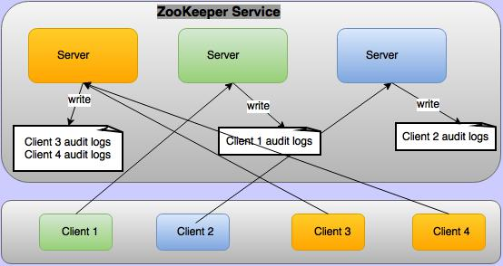

ZooKeeper Audit Logging
ZooKeeper Audit Logs
Apache ZooKeeper supports audit logs from version 3.6.0. By default audit logs are disabled. To enable audit logs configure audit.enable=true in conf/zoo.cfg. Audit logs are not logged on all the ZooKeeper servers, but logged only on the servers where client is connected as depicted in below figure.

The audit log captures detailed information for the operations that are selected to be audited. The audit information is written as a set of key=value pairs for the following keys
| Key | Value |
|---|---|
| session | client session id |
| user | comma separated list of users who are associate with a client session. For more on this, see Who is taken as user in audit logs. |
| ip | client IP address |
| operation | any one of the selected operations for audit. Possible values are(serverStart, serverStop, create, delete, setData, setAcl, multiOperation, reconfig, ephemeralZNodeDeleteOnSessionClose) |
| znode | path of the znode |
| znode type | type of znode in case of creation operation |
| acl | String representation of znode ACL like cdrwa(create, delete,read, write, admin). This is logged only for setAcl operation |
| result | result of the operation. Possible values are (success/failure/invoked). Result "invoked" is used for serverStop operation because stop is logged before ensuring that server actually stopped. |
Below are sample audit logs for all operations, where client is connected from 192.168.1.2, client principal is zkcli@HADOOP.COM, server principal is zookeeper/192.168.1.3@HADOOP.COM
user=zookeeper/192.168.1.3 operation=serverStart result=success
session=0x19344730000 user=192.168.1.2,zkcli@HADOOP.COM ip=192.168.1.2 operation=create znode=/a znode_type=persistent result=success
session=0x19344730000 user=192.168.1.2,zkcli@HADOOP.COM ip=192.168.1.2 operation=create znode=/a znode_type=persistent result=failure
session=0x19344730000 user=192.168.1.2,zkcli@HADOOP.COM ip=192.168.1.2 operation=setData znode=/a result=failure
session=0x19344730000 user=192.168.1.2,zkcli@HADOOP.COM ip=192.168.1.2 operation=setData znode=/a result=success
session=0x19344730000 user=192.168.1.2,zkcli@HADOOP.COM ip=192.168.1.2 operation=setAcl znode=/a acl=world:anyone:cdrwa result=failure
session=0x19344730000 user=192.168.1.2,zkcli@HADOOP.COM ip=192.168.1.2 operation=setAcl znode=/a acl=world:anyone:cdrwa result=success
session=0x19344730000 user=192.168.1.2,zkcli@HADOOP.COM ip=192.168.1.2 operation=create znode=/b znode_type=persistent result=success
session=0x19344730000 user=192.168.1.2,zkcli@HADOOP.COM ip=192.168.1.2 operation=setData znode=/b result=success
session=0x19344730000 user=192.168.1.2,zkcli@HADOOP.COM ip=192.168.1.2 operation=delete znode=/b result=success
session=0x19344730000 user=192.168.1.2,zkcli@HADOOP.COM ip=192.168.1.2 operation=multiOperation result=failure
session=0x19344730000 user=192.168.1.2,zkcli@HADOOP.COM ip=192.168.1.2 operation=delete znode=/a result=failure
session=0x19344730000 user=192.168.1.2,zkcli@HADOOP.COM ip=192.168.1.2 operation=delete znode=/a result=success
session=0x19344730001 user=192.168.1.2,zkcli@HADOOP.COM ip=192.168.1.2 operation=create znode=/ephemral znode_type=ephemral result=success
session=0x19344730001 user=zookeeper/192.168.1.3 operation=ephemeralZNodeDeletionOnSessionCloseOrExpire znode=/ephemral result=success
session=0x19344730000 user=192.168.1.2,zkcli@HADOOP.COM ip=192.168.1.2 operation=reconfig znode=/zookeeper/config result=success
user=zookeeper/192.168.1.3 operation=serverStop result=invoked
ZooKeeper Audit Log Configuration
By default audit logs are disabled. To enable audit logs configure audit.enable=true in conf/zoo.cfg. Audit logging is done using logback. Following is the default logback configuration for audit logs in conf/logback.xml
<!--
zk audit logging
-->
<!--property name="zookeeper.auditlog.file" value="zookeeper_audit.log" />
<property name="zookeeper.auditlog.threshold" value="INFO" />
<property name="audit.logger" value="INFO, RFAAUDIT" />
<appender name="RFAAUDIT" class="ch.qos.logback.core.rolling.RollingFileAppender">
<File>${zookeeper.log.dir}/${zookeeper.auditlog.file}</File>
<encoder>
<pattern>%d{ISO8601} %p %c{2}: %m%n</pattern>
</encoder>
<filter class="ch.qos.logback.classic.filter.ThresholdFilter">
<level>${zookeeper.auditlog.threshold}</level>
</filter>
<rollingPolicy class="ch.qos.logback.core.rolling.FixedWindowRollingPolicy">
<maxIndex>10</maxIndex>
<FileNamePattern>${zookeeper.log.dir}/${zookeeper.auditlog.file}.%i</FileNamePattern>
</rollingPolicy>
<triggeringPolicy class="ch.qos.logback.core.rolling.SizeBasedTriggeringPolicy">
<MaxFileSize>10MB</MaxFileSize>
</triggeringPolicy>
</appender>
<logger name="org.apache.zookeeper.audit.Slf4jAuditLogger" additivity="false" level="${audit.logger}">
<appender-ref ref="RFAAUDIT" />
</logger-->
Change above configuration to customize the auditlog file, number of backups, max file size, custom audit logger etc.
Who is taken as user in audit logs?
By default there are only four authentication provider:
- IPAuthenticationProvider
- SASLAuthenticationProvider
- X509AuthenticationProvider
- DigestAuthenticationProvider
User is decided based on the configured authentication provider:
- When IPAuthenticationProvider is configured then authenticated IP is taken as user
- When SASLAuthenticationProvider is configured then client principal is taken as user
- When X509AuthenticationProvider is configured then client certificate is taken as user
- When DigestAuthenticationProvider is configured then authenticated user is user
Custom authentication provider can override org.apache.zookeeper.server.auth.AuthenticationProvider.getUserName(String id) to provide user name. If authentication provider is not overriding this method then whatever is stored in org.apache.zookeeper.data.Id.id is taken as user. Generally only user name is stored in this field but it is up to the custom authentication provider what they store in it. For audit logging value of org.apache.zookeeper.data.Id.id would be taken as user.
In ZooKeeper Server not all the operations are done by clients but some operations are done by the server itself. For example when client closes the session, ephemeral znodes are deleted by the Server. These deletion are not done by clients directly but it is done the server itself these are called system operations. For these system operations the user associated with the ZooKeeper server are taken as user while audit logging these operations. For example if in ZooKeeper server principal is zookeeper/hadoop.hadoop.com@HADOOP.COM then this becomes the system user and all the system operations will be logged with this user name.
user=zookeeper/hadoop.hadoop.com@HADOOP.COM operation=serverStart result=success
If there is no user associate with ZooKeeper server then the user who started the ZooKeeper server is taken as the user. For example if server started by root then root is taken as the system user
user=root operation=serverStart result=success
Single client can attach multiple authentication schemes to a session, in this case all authenticated schemes will taken taken as user and will be presented as comma separated list. For example if a client is authenticate with principal zkcli@HADOOP.COM and ip 127.0.0.1 then create znode audit log will be as:
session=0x10c0bcb0000 user=zkcli@HADOOP.COM,127.0.0.1 ip=127.0.0.1 operation=create znode=/a result=success